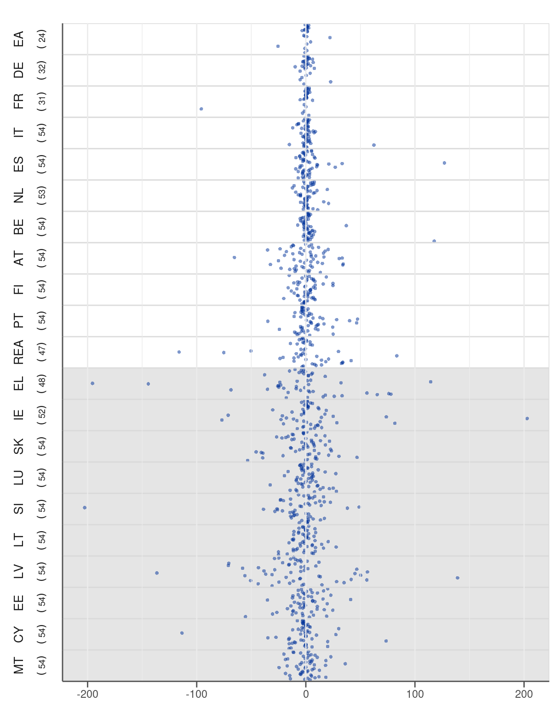
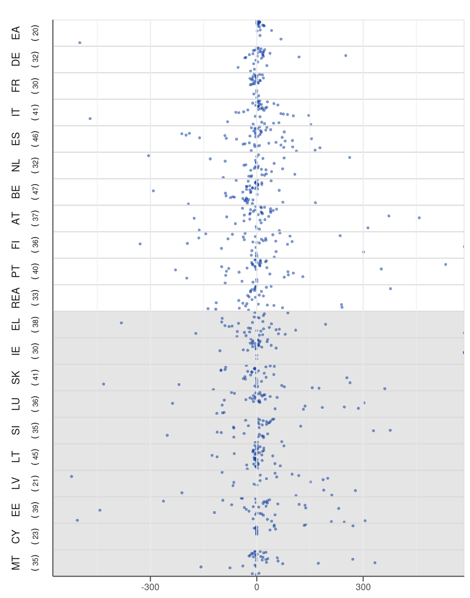
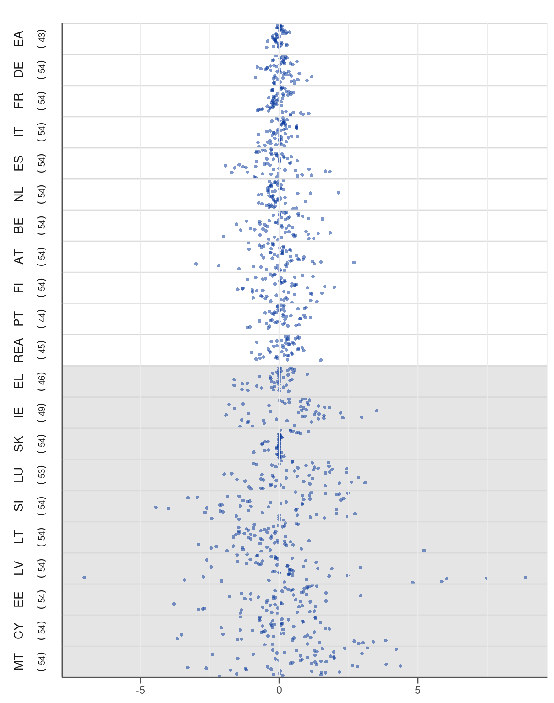

Appendix A — Graphical illustration of the revisions
All final revisions to variables considered (but not necessarily included) in the analysis are illustrated in this appendix section with the twofold objective. First, the graphs are useful for illustrating the magnitude of the revisions across variables and countries. Second, the plots are indispensable to potentially identify any issues with the dataset that could impair our analysis (e.g. excessive values or lack of revisions). Appendix D of the online appendix provides statistical codes used to retrieve the data.
A.1 Fiscal revenue variables
A.2 Fiscal spending variables


A.3 Macro variables
